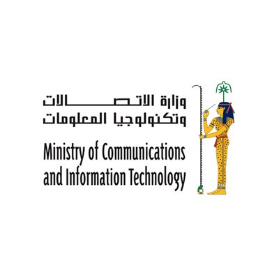
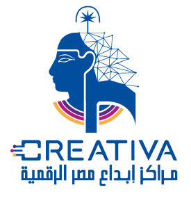

The Information Technology Institute (ITI),
first established in 1993 under the affiliation of
the Egyptian Cabinet's Information and Decision
Support Center, with a mission to develop IT
caliber to cater for the government's decision
support functions,as well as the development of
the ICT industry in Egypt.
|
 |  |